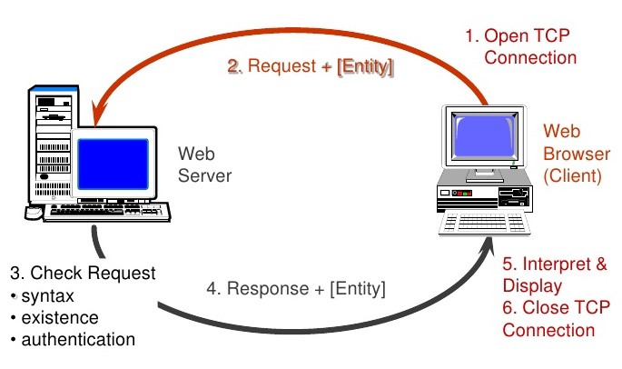
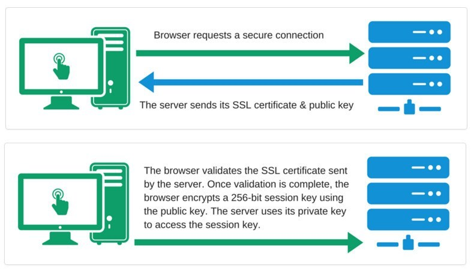
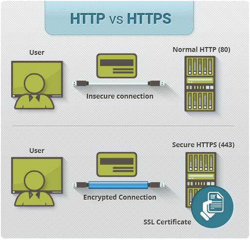
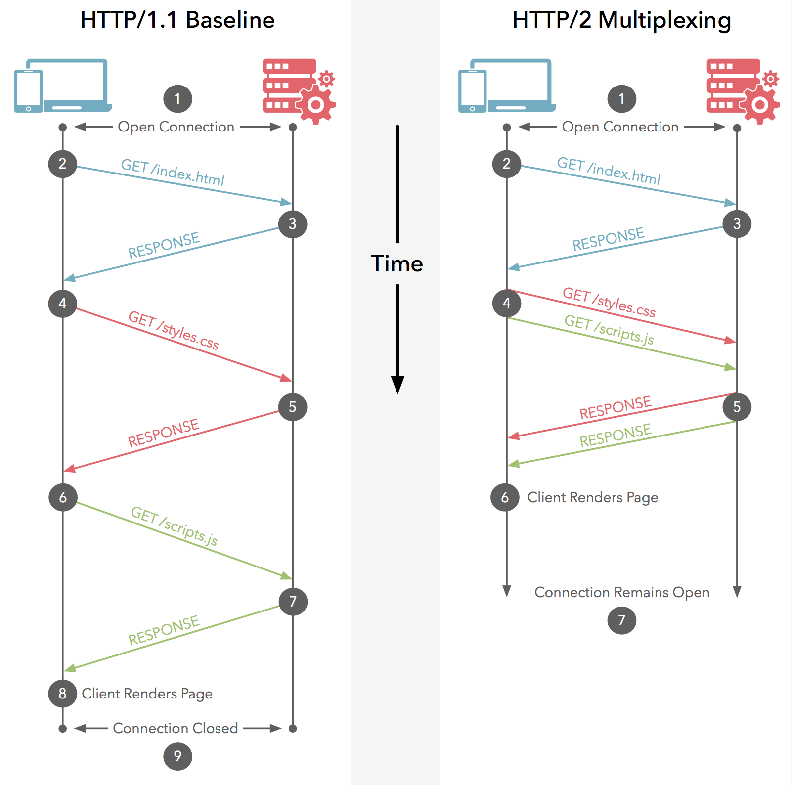

1. Протоколи передачі даних
Протокол — набір правил і угод, що використовуються при передачі даних в мережі.
Перед тим, як користувач побачить вміст сайту на екрані, браузер робить запит на сервер, щоб отримати цей самий вміст. HTML-файл, зображення, стилі, скрипти - кожен елемент приходить з сервера.
2. TCP/IP
Основний протокол мережі Internet. Це два протоколи тісно пов'язаних між
собою.
- TCP (Transmission Control Protocol) — протокол управління передачею.
Визначає, яким чином інформація повинна бути розбита на пакети і
відправлена по каналах зв'язку. TCP має пакети в потрібному порядку, а також перевіряє кожен пакет на наявність помилок при передачі. - IP (Internet Protocol) — кожен інформаційний пакет містить IP-адреси
комп'ютера-відправника і комп'ютера-одержувача. Спеціальні комп'ютери,
звані маршрутизаторами, використовуючи IP-адреси, направляють інформаційні
пакети в потрібну сторону, тобто до зазначеного в них одержувачу.
3. HyperText Transfer Protocol (HTTP)
Браузер запитує і отримує дані через HTTP-протокол, тому браузер ще називають HTTP-клієнтом.
Протокол передачі гіпертексту (HTTP) — спеціально розроблений протокол як
основа World Wide Web, використовується для передачі всіх необхідних типів
даних: html, зображень, аудіо та відео, css, javascript і т. д. Дефолтний
TCP-порт - 80.
HTTP заснований на моделі клієнт-сервер і протоколі запит-відповідь, який працює шляхом обміну повідомленнями через надійне TCP/IP з'єднання.

Є клієнт, який ініціює з'єднання і посилає запит, і сервер, який очікує з'єднання для отримання запиту, проводить необхідні дії і повертає назад повідомлення з результатом. Зв'язок між нею здійснюється за допомогою низки перемежовуючих HTTP-запитів і HTTP-відповідей.
3.1. HyperText Transfer Protocol Secure (HTTPS)
HTTPS — це надбудова над HTTP-протоколом, в якій всі сполучення між клієнтом
і сервером шифруються з метою підвищення безпеки. забезпечує захист від атак,
заснованих на прослуховуванні з'єднання. Дані передаються поверх криптографічних
протоколів SSL або TLS. Дефолтний TCP-порт — 443.

При спілкуванні через звичайне HTTP-з'єднання всі дані передаються у вигляді тексту і можуть бути прочитані всіма, хто отримав доступ до з'єднання між клієнтом і сервером. Якщо користувач робить покупки онлайн і заповнює форму замовлення, що містить інформацію про кредитну картку, їх фінансові дані набагато легше вкрасти, якщо вони передаються у вигляді тексту. З HTTPS дані будуть зашифровані, і хакер не зможе їх розшифрувати, тому що для розшифровки необхідний доступ до закритого ключа, який зберігається на сервері.

- Інформація про клієнта, наприклад номери кредитних карт, зашифрована і не може бути перехоплена в розшифрованому вигляді.
- Відвідувачі можуть підтвердити, що сайт безпечний, подивившись на іконку зліва від адресного рядка, захищені з'єднання позначаються та іконкою замку.
- Клієнти з більшою ймовірністю будуть довіряти і здійснювати покупки з сайтів, які використовують HTTPS.
3.2. На що витрачає час HTTP-запит
Запит відбувається в кілька етапів:
- DNS-запит — пошук найближчого DNS-сервера, щоб перетворити адресу (наприклад google.com) в його числове уявлення, IP-адрес (74.125.87.99).
- З'єднання — установка з'єднання з сервером за отриманим IP-адресом.
- Відправка даних — пересилання пакетів з клієнта на сервер.
- Очікування відповіді — чекаємо поки пакети даних дійдуть до сервера, він їх обробить і відповідь повернеться назад.
- Отримання даних — пакети прийшли, можна отримувати з них дані.
4. HTTP/1.1 і HTTP/2
